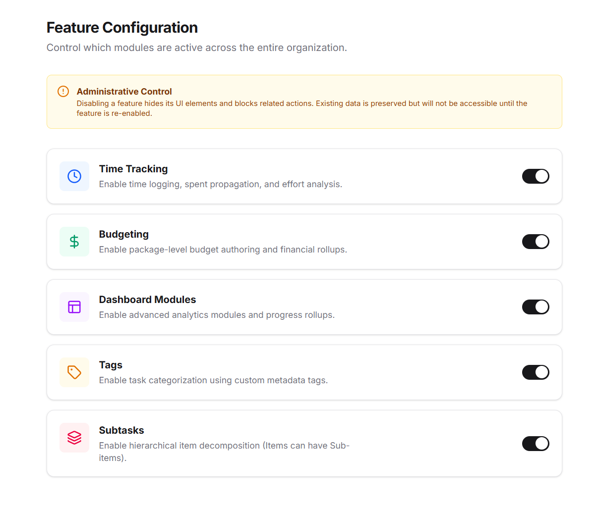
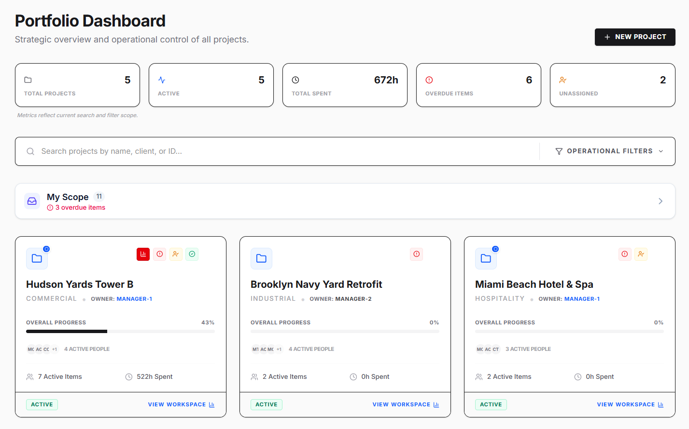
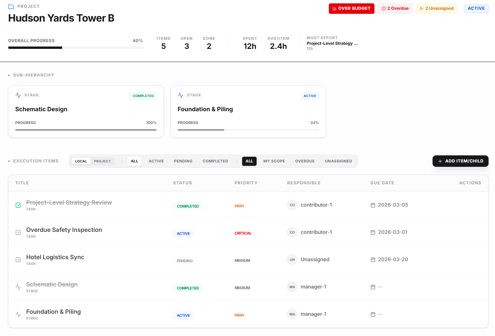

Align structure, execution, and health in one unified workspace.
Stratum is a design delivery coordination system built for complex architectural and engineering projects. It bridges the gap between high-level project structure and day-to-day execution.
Teams often lose context when moving between high-level portfolio views and detailed work items. Information becomes siloed, and project health signals are delayed or disconnected from the actual work.
Stratum keeps these aligned in one operational model. By anchoring execution directly to the project hierarchy, we ensure that every task contributes to a clear, measurable outcome.
Organize work by Area, Project, Stage, and Discipline with rigid structural integrity.
Tasks anchor to structural nodes but remain fluid for responsive team coordination.
Real-time indicators for schedule, budget, and resource alignment at every level.
Granular control over who can edit, view, and manage specific parts of the project tree.
A familiar, powerful explorer interface for drilling down into complex project structures.
Standardize delivery by spinning up new projects from proven structural templates.
Enable only the capabilities your team needs. Stratum supports phased adoption, allowing each practice to activate features according to its delivery model, governance needs, and operational maturity.

Define your project hierarchy or use a template to standardize your delivery model.
Assign owners, log time, and track task progress directly within the hierarchy.
Get instant visibility into budget burn, schedule risks, and resource allocation.

Portfolio overview

Workspace drilldown
Enter the demo environment to experience Stratum firsthand. Switch between personas to see how different roles interact with the system.